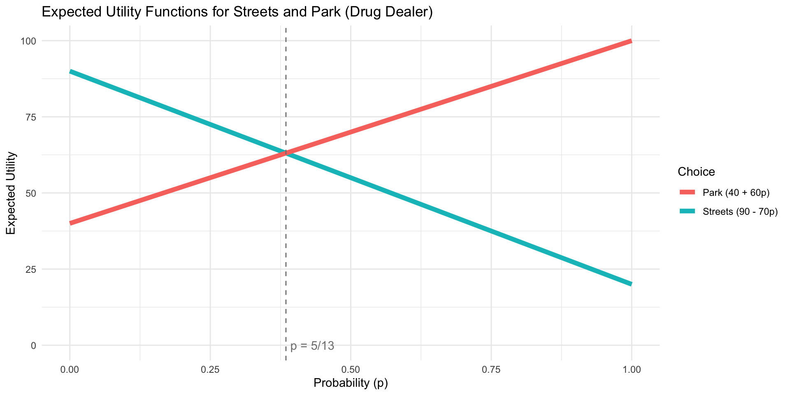

Introduction to Game Theory
Mixed Strategies and Strategic Uncertainty
Dante Yasui
2025
Responding to Chance
Thinking about Randomness
“Rational decision makers are able to give reasons for each action they take; outside Las Vegas players do not spin roulette wheels” 1
Do you agree?
Would rational players act randomly?
Mixing Tennis Hits
Should Evert hit Down the Line or Cross-Court?
| Evert, Navratilova | DL | CC |
|---|---|---|
| DL | 50, 50 | 80, 20 |
| CC | 90, 10 | 20, 80 |
- Can you find any Best Responses?
Mixing Tennis Hits
Should Evert hit Down the Line or Cross-Court?
| Evert, Navratilova | DL | CC |
|---|---|---|
| DL | 50, 50 | 80, 20 |
| CC | 90, 10 | 20, 80 |
- No Nash in pure strategies
- Zero-sum game, so incentive to keep opponent guessing
Motivating Randomized Play
Why should we use mixed strategies?!
Some zero-sum games incentivize keeping opponent guessing
Even in non-zero sum games, mixed strategies open up new possibilities
Interpret mixed strategy of one player as the beliefs of other players
Probability and statistics are useful outside of this class
Lotteries
Any choices with uncertain payoffs will be called lotteries.
- Doesn’t have to only be about money
- Any outcome has an associated probability:
- if \(o\) is a possible outcome, then \(p(o)\) is that outcomes probability
- All probabilities must be between 0 and 1:
- \(0 \leq P(a) \leq 1\) for all possibilities \(a\).
- All probabilities in a particular lottery must sum to exactly 1:
Expected Payoffs
How to form a preference for something with an uncertain outcome?
\(U(L) = \mathbb{E}[u(o)] = \sum_{o\in L}u(o)p(o)\)
Average values of a lottery times the probability of how likely each is.
Lottery \(L\) may have two or more potential outcomes \(o_1, o_2, ...\)
The utility function \(u(o)\) tells how much you like each outcome
- Could reflect different risk preferences for e.g., money
Cardinal Payoffs
Expected payoffs imply that payoffs are cardinal
- relative differences in payoffs matter
- instead of ordinal where only rankings matter
- i.e. an outcome with payoff 2 is actually twice as good as an outcome with payoff 1.
Von-Neumann Morgenstern Utility
We need new assumptions for rationality over lotteries:
Continuity: Small changes in probabilities shouldn’t make your ranking jump around.
Independence: If you know which of two lotteries you prefer, when I add a little bit of another unrelated option into both, it shouldn’t change your mind.
expected utility requires special assumptions, so it gets it’s own special name:
- Von-Neumann Morgenstern utility function
Types of Uncertainty
Two main types of uncertainty: external and internal.
- External uncertainty from factors outside of the players’ control
- such as weather or other random events, or external players
- Internal uncertainty from players’ own actions:
- when some player acts in an unpredictable way,
- even to themselves
- For example, I flip a coin to tell me what to choose
- when some player acts in an unpredictable way,
Internal Uncertainty
When one or more players pick their strategies randomly.
Picking a strategy at random is really just a different kind of strategy, called a mixed strategy.
Mixed Strategies in 2x2 Games
Mixed Strategies
When a player always does the same thing, it’s called a pure strategy
A mixed strategy assigns a probability to each of a player’s pure strategies.
- Like a lottery, the probabilities in a mixed strategy must all be between 0 and 1,
- and must sum to exactly 1.
Mixed Strategies
- A mixed strategy can assign 0 probability to a pure strategy.
- It can even assign probability 1 to a single pure strategy, and probability 0 to all others
- this is still, technically, a mixed strategy, but it is a trivial one.
- When a player uses a mixed strategy, it turns the other player’s payoffs into lotteries.
Evert’s mixed strategy as Navratilova’s lottery
Suppose Evert puts a 75% probability on DL:
| Evert, Navratilova | DL | CC |
|---|---|---|
| DL | 50, 50 | 80, 20 |
| CC | 90, 10 | 20, 80 |
What are Navratilova’s expected payoffs?
- \(EV_N(DL_N) = .75\times 50 + .25\times 10 = 37.5 + 2.5 = 40\)
- \(EV_N(CC_N) = .75\times 20 + .25\times 80 = 15 + 20 = 35\)
- What should Navratilova play in this case?
- Only DL!
- Not an exploitation-proof strategy for Evert
- Evert would get a payoff of 60 because Navratilova chooses DL
- What should Navratilova play in this case?
Opponent’s indifference sets optimal mixed strategy
How can Evert avoid her mixed strategy being exploited?
- If she plays DL too often, Navratilova will always play DL
- Navratilova will score more often than Evert
- If Evert plays CC too often, Navratilova always plays CC
- Again, Navratilova will score more often
- How can we find the sweet spot between too much of one strategy?
- How can we make Evert’s mixed strategy exploitation-proof?
Opponent’s Indifference Property
Confusingly, Evert’s optimal mixed strategy depends on her opponent’s indifference
- Let’s call \(p\) the probability Evert hits DL
- If \(EV_N(DL_N, p) > EV_N(CC_N, p)\), Navratilova only DL
- If \(EV_N(DL_N, p) < EV_N(CC_N, p)\), Navratilova only CC
- What if \(EV_N(DL_N, p) = EV_N(CC_N, p)\)?
- Navratilova is indifferent
Solving for Navratilova’s indifference
For Evert’s mixed strategy to be exploitation-proof we need:
- \(EV_N(DL_N, p) = EV_N(CC_N, p)\)
- \(p\times 50 + (1-p)\times 10 = p\times 20 + (1-p)\times 80\)
- Evert can choose \(p\) to achieve this indifference
- \(50p + 10 - 10p = 20p + 80 - 80p\)
- \(100p = 70\)
- \(p^* = 0.7\)
- Double-check, does 70% prob leave Navratilova indifferent?
Checking for Navratilova’s indifference
If Evert plays DL 70% of the time (and CC 30%),
- \(EV_{\text{Navratilova}}(DL) = 0.7\times 50 + 0.3\times 10 = 38\)
- \(EV_{\text{Navratilova}}(CC) = 0.7\times 20 + 0.3\times 80 = 38\)
- So Navratilova is indifferent!
- Because zero-sum payoffs, Evert’s gets 62 no matter what Navratilova does
- Can Evert do any better?
- No! Any deviation would lead to Navratilova going back to pure-strat BR
When to Play a Mixed Strategy?
Mixed strategy is a best response:
- if and only if all of the mixed strategy’s components are best responses too.
- components: pure strategies that are assigned positive probability
- If a strategy is not a best response, you should not play it
- even as part of a mixed strategy.
Graphing Navratilova’s Expected Utilities
Graph Navratilova’s Best Response Rule to p
Let’s define \(q\) as the probability Navratilova goes DL:

Mixed-Strategy Nash Equilibrium
For Nash equilibria where players use mixed strategies:
Each player need to best respond to the other’s mixed strategy
Any player choosing a mixed strategy:
- must be indifferent between their component pure strategies
- I.e., the discrete strats that are played with positive probability
- must be indifferent between their component pure strategies
Evert’s expected utilities as Lottery over q
When will Evert best respond to Navratilova?

Graph Evert’s Best Response Rule to q
Evert chooses a \(p\) in response to Navratilova’s \(q\):

Graph Intersection of Best Response Rules
Mixed Strategy Nash Equilibrium
MSNE:
- When Evert plays DL with \(p=0.7\), CC with \((1-p)=0.3\)
- and Navratilova plays DL with \(q=0.6\), CC with \((1-q)=0.4\)
Does this method look familiar?
- MSNE is an NE with probabilities as continuous strategies
Mixed strategies in larger games
MSNE in a Larger Game
Suppose that we have this 3x2 game:
| \(P_1\), \(P_2\) | X (r) | Y (1 - r) |
|---|---|---|
| A (\(\alpha\)) | 2, 1 | 0, 1 |
| B (\(\beta\)) | 1, 2 | 2, 0 |
| C (\(\gamma\)) | 0, 0 | 3, 2 |
- Player 1’s mixed strategy uses probabilities \(\alpha, \beta, \gamma\) since they have three pure strategies.
- You could also replace \(\gamma\) with \((1-\alpha-\beta)\)
- because lotter probabilites sum to one
- You could also replace \(\gamma\) with \((1-\alpha-\beta)\)
- Player 2 just has two pure strategies w/ probability \(r\) of \(X\)
3-Strategy Player’s Payoffs
Let’s put together Player 1’s expected payoffs:
| \(P_1\), \(P_2\) | X (\(r\)) | Y (\(1-r\)) |
|---|---|---|
| A | 2, 1 | 0, 1 |
| B | 1, 2 | 2, 0 |
| C | 0, 0 | 3, 2 |
They have three discrete strategies to choose from:
- \(EU_1(A) = 2r + 0 = 2r\).
- \(EU_1(B) = 1r + 2(1 - r) = 2 - r\).
- \(EU_1(C) = 0 + 3(1 - r) = 3 - 3r\).
3-strategy Player’s Indifference
When would Player 1 want to play different strategies?
- Indifferent between A and B: \(2r = 2 - r \implies r = \frac{2}{3}\).
- Indifferent between A and C: \(2r = 3 - 3r \implies r = \frac{3}{5}\).
- Indifferent between B and C: \(2 - r = 3 - 3r \implies r = \frac{1}{2}\).
- Note that each pair of strategies requires a different value of \(r\):
- never willing to mix all three of their pure strategies.
- Note that each pair of strategies requires a different value of \(r\):
Graph Player 1’s expected utilities

- If \(r<0.5\) then \(BR_1 = \{C\}\)
- If \(r=0.5\) then \(BR_1 = \{B,C\}\)
- If \(0.5<r<0.\bar{6}\) then \(BR_1 = \{B\}\)
- If \(r=0.\bar{6}\) then \(BR_1 = \{A,B\}\)
- If \(0.\bar{6}<r\) then \(BR_1 = \{A\}\)
When will Player 1 mix?
What it would take to get Player 1 to mix different pairs of strategies:
- A and B: \(2r = 2 - r \implies r = \frac{2}{3}\).
- A and C: \(2r = 3 - 3r \implies r = \frac{3}{5}\).
- B and C: \(2 - r = 3 - 3r \implies r = \frac{1}{2}\).
- Note that there is no intersection between all three lines simultaneously
- This means that Player 1 will never mix between all three strategies
Two-Strat Player’s Indifference
| \(P_1\), \(P_2\) | X | Y |
|---|---|---|
| A (\(\alpha\)) | 2, 1 | 0, 1 |
| B (\(\beta\)) | 1, 2 | 2, 0 |
| C (\(\gamma\)) | 0, 0 | 3, 2 |
Let’s check Player 2’s expected payoffs next:
- They only have two pure strats, but have to react to three different probabilities
- \(U_2(X) = 1\alpha + 2\beta + 0\gamma\).
- \(U_2(Y) = 1\alpha + 0\beta + 2\gamma\).
MSNE in a Larger Game
Let’s check Player 2’s expected payoffs next:
- \(U_2(X) = 1\alpha + 2\beta + 0\).
- \(U_2(Y) = 1\alpha + 0 + 2\gamma\).
- Opponent’s Indifference Condition:
- Player 2 will mix if \(\alpha + 2\beta = \alpha + 2\gamma \implies \beta = \gamma\).
- Examples of when this can be true:
- Either Player 1 plays B and C equally
- or Player 1 plays A only, and B and C not at all.
visualizing Player 2’s Best Responses

- If \(\beta<\gamma\) then \(BR_2 = \{X\}\)
- If \(\beta>\gamma\) then \(BR_2 = \{Y\}\)
- If \(\beta=\gamma\) then \(BR_2 = \{X,Y\}\)
- AKA they would be willing to mix between \(X\) and \(Y\) with prob \(r\)
Checking for all MSNE
There might be multiple MSNE
How can we make sure we find them all?
Check case-by-case
I’ll use the ranges of \(r\) to check for any BR intersections
Checking for all MSNE
Case 1: \(r>2/3\):
- Player 1 only plays A
- Player 2 is indifferent between X and Y
- because \(\beta=\gamma=0\)
- So player 2 will be willing to mix
- MSNE 1:
- \(\sigma_1 = (\alpha = 1, \beta = 0, \gamma = 0),\)
- \(\sigma_2 = (r, 1 - r)\) where \(r \geq \frac{2}{3}\).
| \(P_1\), \(P_2\) | X | Y |
|---|---|---|
| A | 2, 1 | 0, 1 |
| B | 1, 2 | 2, 0 |
| C | 0, 0 | 3, 2 |
Checking for all MSNE
Case 2: \(r=2/3\):
- Player 1 is indifferent betwen A and B
- Never plays C
- Player 2 won’t mix if \(\beta\neq \gamma =0\)
- MSNE 1:
- \(\sigma_1 = (1, 0, 0),\)
- \(\sigma_2 = (\frac{2}{3}, \frac{1}{3})\)
- This is just a subcase of MSNE 1
| \(P_1\), \(P_2\) | X | Y |
|---|---|---|
| A | 2, 1 | 0, 1 |
| B | 1, 2 | 2, 0 |
| C | 0, 0 | 3, 2 |
Checking for all MSNE
Case 3: \(\frac{1}{2}<r<\frac{2}{3}\)
- then Player 1 plays only B
- But if \(\beta=1\) then \(\gamma \neq \beta\)
- Player 2 is no longer indifferent
- They would rather play only X
- No MSNE here
Checking for all MSNE
Case 4: \(r=\frac{1}{2}\)
- Player 1 mixes between B and C
- But never plays A (\(\alpha=0\))
- Player 2 will mix if \(\beta=\gamma\)
- MSNE 2:
- \(\sigma_1 = (\alpha = 0, \beta = 1/2, \gamma = 1/2)\),
- \(\sigma_2 = (1/2, 1/2)\)

Checking for all MSNE
Case 5: \(r<\frac{1}{2}\)
- Player 1 only plays C
- Player 2’s best response is only Y
- MSNE 3:
- \(\sigma_1 = (\alpha = 0, \beta = 0, \gamma = 1)\),
- \(\sigma_2 = (0, 1)\)
- This is also a pure strategy Nash
| \(P_1\), \(P_2\) | X | Y |
|---|---|---|
| A | 2, 1 | 0, 1 |
| B | 1, 2 | 2, 0 |
| C | 0, 0 | 3, 2 |
MSNE in 3x2 Game
So across all cases, we found:
- Two pure strategy Nash:
- \(\{A, X\}\)
- \(\{C, Y\}\)
- One MSNE where both player mix:
- \(\{(0A, 1/2 B, 1/2 C),~ (1/2 X, 1/2 Y)\}\)
- Another MSNE when only Player 2 mixes:
- \(\{(1A, 0 B, 0 C),~ (r X, (1-r) Y)\}\) where \(r \geq 2/3\)
- (includes PSNE \(\{A, X\}\))
- \(\{(1A, 0 B, 0 C),~ (r X, (1-r) Y)\}\) where \(r \geq 2/3\)
Solving MSNE in a 3x3 Game
| \(P_1\), \(P_2\) | Left | Center | Right |
|---|---|---|---|
| Top | 2, 1 | 3, 0 | 3, 0 |
| Middle | 3, 0 | 0, 1 | 3, 0 |
| Bottom | 3, 0 | 3, 0 | 2, 1 |
Any pure strategy NE?
Solving for 3-strategy MSNE
Step 1: Define Mixed Strategies
Player 1’s mixed strategy: Let \(\sigma_1 = (t, m, b)\)
Player 2’s mixed strategy: Let \(\sigma_2 = (\ell, c, r)\)
Note that the lowercase letters represent the probabilities played on the uppercase pure strategies.
Solving for 3-strategy MSNE
Step 2: Solve for Expected Utilities
- Player 1:
- \(EU_1(T, \sigma_2) = 2\ell + 3c + 3r\)
- \(EU_1(M, \sigma_2) = 3\ell + 3r\)
- \(EU_1(B, \sigma_2) = 3\ell + 3c + 2r\)
- Player 2:
- \(EU_2(L, \sigma_1) = t\)
- \(EU_2(C, \sigma_1) = m\)
- \(EU_2(R, \sigma_1) = b\)
Solving for 3-strategy MSNE
Step 3: Find Indifference Conditions
When will Player 1 mix between 2 pure strategies?
When does \(EU_1(Top, \sigma_2) \geq EU_1(Middle, \sigma_2)\):
\[ \begin{align} 2\ell + 3c + 3r & \geq 3\ell + 3r \\ \Rightarrow 3c & \geq \ell \end{align} \]
When does \(EU_1(Top, \sigma_2) \geq EU_1(Bottom, \sigma_2)\):
\[ \begin{align} 2\ell + 3c + 3r & \geq 3\ell + 3c + 2r \\ \Rightarrow r & \geq \ell \end{align} \]
When does \(EU_1(Middle, \sigma_2) \geq EU_1(Bottom, \sigma_2)\):
\[ \begin{align} 3\ell + 3r & \geq 3\ell + 3c + 2r \\ \Rightarrow r & \geq 3c \end{align} \]
Solving for 3-strategy MSNE
Step 3: Find Indifference Conditions
When will Player 2 mix between 2 pure strategies?
- When does \(EU_2(Left, \sigma_1) \geq EU_2(Center, \sigma_1)\): \[ t \geq m \]
- When does \(EU_2(Left, \sigma_1) = EU_2(Right, \sigma_1)\): \[ t \geq b \]
- When does \(EU_2(Center, \sigma_1) = EU_2(Right, \sigma_1)\): \[ m \geq b \]
Solving for 3-strategy MSNE
Step 4: Check Cases for possible Nash Equilibria:
| \(P_1\), \(P_2\) | Left | Center | Right |
|---|---|---|---|
| Top | 2, 1 | 3, 0 | 3, 0 |
| Middle | 3, 0 | 0, 1 | 3, 0 |
| Bottom | 3, 0 | 3, 0 | 2, 1 |
Any cases where either player plays only one pure strategy?
- No! We already checked for PSNE in the table
Solving for 3-strategy MSNE
Step 4: Check Cases for possible Nash Equilibria:
Case 1: Player 2 mixes between Left and Center
Then we know that \(EU_2(\text{Left}) = EU_2(\text{Center}) > EU_2(R)\)
\[ \Rightarrow t = m > b\]
- If \(\ell > 3/4\) then \(BR_1 = \{\text{Middle}\} \Rightarrow m = 1\)
- contradiction: \(m\) can’t be equal to \(t\) and also sum to 1
- If \(\ell < 3/4\) then \(BR_1 = \{\text{Top}\} \Rightarrow t = 1\)
- contradiction: \(t\) can’t be equal to \(m\) and also sum to 1
- If \(\ell = 3/4\) then \(BR_1 = (t, m, 0)\)
- No contradiction!
- So \(\{ \sigma_1 = (t = 1/2, m = 1/2, b = 0)\), \(\sigma_2 = (\ell = 3/4, c = 1/4, r = 0) \}\) is an MSNE
Solving for 3-strategy MSNE
Step 4: Check Cases for possible Nash Equilibria:
Case 2: Player 2 mixes between Left and Right
Then we know that \(EU_2(\text{Left}) = EU_2(\text{Right}) > EU_2(Center)\)
\[ \Rightarrow t = b > m\]
- If \(\ell > 1/2\) then \(BR_1 = \{\text{Bottom}\} \Rightarrow b = 1\)
- contradiction: \(b\) can’t be equal to \(t\) and also sum to 1
- If \(\ell < 1/2\) then \(BR_1 = \{\text{Top}\} \Rightarrow t = 1\)
- contradiction: \(t\) can’t be equal to \(b\) and also sum to 1
- If \(\ell = 1/2\) then \(BR_1 = (t, 0, b)\)
- No contradiction!
- So \(\{ \sigma_1 = (t = 1/2, m = 0, b = 1/2)\), \(\sigma_2 = (\ell = 1/2, c = 0, r = 1/2) \}\) is an MSNE
Solving for 3-strategy MSNE
Step 4: Check Cases for possible Nash Equilibria:
Case 3: Player 2 mixes between Center and Right
Then we know that \(EU_2(\text{Center}) = EU_2(\text{Right}) > EU_2(Left)\)
\[ \Rightarrow m = b > t\]
- If \(r > 3/4\) then \(BR_1 = \{\text{Middle}\} \Rightarrow m = 1\)
- contradiction: \(m\) can’t be equal to \(b\) and also sum to 1
- If \(r < 3/4\) then \(BR_1 = \{\text{Bottom}\} \Rightarrow b = 1\)
- contradiction: \(b\) can’t be equal to \(m\) and also sum to 1
- If \(r = 3/4\) then \(BR_1 = (0, m, b)\)
- No contradiction!
- So \(\{ \sigma_1 = (t = 0, m = 1/2, b = 1/2)\), \(\sigma_2 = (\ell = 0, c = 1/4, r = 3/4) \}\) is an MSNE
Solving for 3-strategy MSNE
Step 4: Check Cases for possible Nash Equilibria:
Case 4: Player 2 mixes between Left, Center, and Right
Then we know that \(EU_2(\text{Center}) = EU_2(\text{Right}) = EU_2(Left)\)
\[ \Rightarrow t = m = b\]
\[ \Rightarrow \ell = 3c = r\]
And because probabilities must sum to one:
\[ \begin{align} 3c + c + 3c & = 1 \\ \Rightarrow 7c & = 1 \\ c & = 1/7 \end{align} \]
\(\{ \sigma_1 = (t = 1/3, m = 1/3, b = 1/3),\) \(\sigma_2 = (\ell = 3/7, c = 1/7, r = 3/7) \}\) is an MSNE
Mixed-Strategy Examples
MSNE in Prisoners’ Dilemma?
Remember the Prisoners’ Dilemma?
| Guido, Luca | \(Testify~(q)\) | \(Keep~Quiet~(1-q)\) |
|---|---|---|
| \(Testify~(p)\) | \(-10,-10\) | \(0,-20\) |
| \(Keep~Quiet~(1-p)\) | \(-20,0\) | \(-1,-1\) |
What are Guido’s and Luca’s Expected Payoffs?
- \(EU_G(Testify) = -10q + 0(1 - q) = -10q\).
- \(EU_G(Keep Quiet) = -20q + (-1)(1 - q) = -1 - 19q\).
- \(EU_L(Testify) = -10p + 0(1 - p) = -10p\).
- \(EU_L(Keep Quiet) = -20p + (-1)(1 - p) = -1 - 19p\).
Absence of MSNEs
Guido will play a mixed strategy if:
\[ \begin{align*} -10q &= -1 - 19q\\ 9q &= -1\\ q &= -1/9 \end{align*} \]
- What’s wrong with this?
- -1/9 is not a valid probability!
- We could also note that if \(q\in [0, 1]\):
- \(-10q\) is always greater than \(-1 - 19q\).
- Testify strictly dominates Keep~Quiet
- Never rational to play a strictly dominated strategy
Getting Bad Probabilities
If you’ve solved for a player’s mixed strategy and you find that the probability is less than 0, or more than 1:
- It means something is wrong.
- Probability can only be between 0 and 1 (inclusive).
- Double-check your math
- Did you make an algebra mistake?
- If your math is correct, this means that there is no way that the player would ever play a mixed strategy:
- in fact, they have a strictly dominated strategy.
Mixed Strategies in the Deer Hunt
Consider the Deer Hunt:
| Igg, Ogg | Deer | Rabbit |
|---|---|---|
| Deer | \(2, 2\) | \(0, 1\) |
| Rabbit | \(1, 0\) | \(1, 1\) |
Suppose that Igg hunts Deer 3/4 of the time, and Rabbit 1/4 of the time.
- If Ogg always hunts deer; what is Ogg’s expected payoff?
- Ogg’s expected payoff from playing Deer will be \(0.75(2) + 0.25(0) = 1.5\).
Mixed Strategies in the Deer Hunt: Generalizing
We can generalize this approach to calculate Ogg’s expected payoffs from any strategy that Igg chooses to play:
- Suppose Igg plays Deer with prob p, and Rabbit with prob 1 - p.
- Ogg’s expected payoff from Deer is:
- \(2(p) + 0(1 - p) = 2p\),
- and from Rabbit:
- \(1(p) + 1(1 - p) = 1\).
- Ogg’s expected payoff from Deer gets larger with p:
- more likely Igg is to hunt Deer, more attractive Deer becomes to Ogg.
MSNE in the Deer Hunt
We already saw that Ogg’s expected payoffs from Deer and Rabbit are \(2p\) and \(1\), respectively,
so Ogg would only play a mixed strategy if \(p = \frac{1}{2}\).
- Likewise, Igg’s expected payoffs are \(2q\) and \(1\), and Igg will play a mixed strategy if \(q = \frac{1}{2}\).
- The MSNE in this game can be written as: \(\{(1/2~Deer, 1/2~Rabbit)_{Ogg}, \ (1/2~Deer, 1/2~Rabbit)_{Igg}\}\).
Practice your understanding
Consider the following game table. What are Player 1’s expected payoffs, given Player 2’s mixed strategy?
| \(P_1\), \(P_2\) | Up \((q)\) | Down \((1 - q)\) |
|---|---|---|
| Up \((p)\) | 2, -2 | -3, 3 |
| Down \((1 - p)\) | -5, 5 | 1, -1 |
- \(U_1(Up) = 2q -3(1-q) = 5q - 3\),
- \(U_1(Down) = -5q + 1(1-q) = -6q +1\)
Practice your understanding
Consider the following game table. What are Player 2’s expected payoffs, given Player 1’s mixed strategy?
| \(P_1\), \(P_2\) | Up \((q)\) | Down \((1 - q)\) |
|---|---|---|
| Up \((p)\) | 2, -2 | -3, 3 |
| Down \((1 - p)\) | -5, 5 | 1, -1 |
- \(U_2(Up) = -2p + 5(1-p) = -7p + 5\),
- \(U_2(Down) = 3p - 1(1-p) = 4p -1\)
Practice your understanding
The correct answers to the previous two questions were:
- \(U_1(Up) = 5q - 3\)
- \(U_1(Down) = -6q + 1\).
- \(U_2(Up) = -7p + 5\)
- \(U_2(Down) = 4p - 1\).
Based on this, what are \(p\) and \(q\) in the MSNE of this game?
- \(p^* = 6/11\)
- \(q^* = 4/11\)
Multiple MSNE in one game
Consider the following game table:
| \(P_1\), \(P_2\) | \(X~(q)\) | \(Y~(1 - q)\) |
|---|---|---|
| \(A~(p)\) | 2, 2 | 3, 2 |
| \(B~(1 - p)\) | 4, 3 | 0, 0 |
The players’ expected payoffs are:
\[ \begin{align*} U_1(A) & = 2q + 3(1 - q) \\ & = 2q + 3 - 3q \\ & = 3 - q \\ U_1(B) & = 4q + 0(1 - q) \\ & = 4q \\ U_2(X) & = 2p + 3(1 - p) \\ & = 2p + 3 - 3p \\ & = 3 - p \\ U_2(Y) & = 2p + 0(1 - p) \\ & = 2p \end{align*} \]
Multiple MSNE in one game
Based on this, the conditions under which each player will use a mixed strategy are:
\[ \begin{align*} Player~1: && Player~2:&\\ 3 - q &= 4q & 3 - p &= 2p\\ 3 &= 5q & 3 &= 3p\\ q &= 3/5 & p &= 1 \end{align*} \]
- We’ve never seen anything like \(p = 1\) in this context before…
- Player 2 will only mix if Player 1 only plays A
- This usually occurs when one strategy weakly dominates another.
Error-Checking
Make sure that you’re setting up the equations used to solve for a player’s strategy correctly:
- Describe when a player is indifferent between their pure strategies:
- if you’re trying to figure out when Player 1 is indifferent, you need to use Player 1’s payoffs.
- However, the probabilities will be based on the other player’s mixed strategy:
- in a game with mixed strategies, the randomness a player deals with is created by the other player—not themselves.
Multiple MSNE in one game


Multiple MSNE in one game
We can still approach this the same way that we have in the past:
| \(P_1\), \(P_2\) | \(X~(q)\) | \(Y~(1 - q)\) |
|---|---|---|
| \(A~(p)\) | 2, 2 | 3, 2 |
| \(B~(1 - p)\) | 4, 3 | 0, 0 |
- Suppose in MSNE that Player 1 plays a (non-trivial) mixed strategy.
- Then Player 2 must also play a mixed strategy, in which q = 3/5.
- But Player 2 will only mix if Player 1 plays p = 1, which is a trivial mixed strategy.
- This is a contradiction, there is no MSNE where Player 1 plays a non-trivial mixed strategy
Multiple MSNE in one game
Approach it the other way next:
| \(P_1\), \(P_2\) | \(X~(q)\) | \(Y~(1 - q)\) |
|---|---|---|
| \(A~(p)\) | 2, 2 | 3, 2 |
| \(B~(1 - p)\) | 4, 3 | 0, 0 |
Suppose Player 2 plays a non-trivial mixed strategy.
- Then Player 1 must play A as a pure strategy.
- Player 2 will play A if \(3 - q \geq 4q\), i.e. if \(3/5 \geq q\).
- This lets Player 2 play a non-trivial mixed strategy! There is no contradiction here.
Multiple MSNE in one game
- There are a range of MSNEs here: all strategy profiles \((1, 0), (q, 1 - q)\), in which \(q \in (0, 3/5]\)
- There are also two trivial MSNEs, \((1, 0), (0, 1)\) and \((0, 1), (1, 0)\), which are really just the pure-strategy Nash equilibria (A, Y) and (B, X) expressed in the form of an MSNE.
- It will help to understand what’s going on with the Best Responses graph:
Multiple MSNE in one game

Penalty Kick Shootout
Mixed Strategies in Penalty Kicks
Why might randomized actions be useful?
- reaction times \(\rightarrow\) essentially simultaneous game
- zero-sum game with incentive to keep the other player guessing
- Being predictable helps your opponent
- modelling observed strategies chosen as random variables
- Can compare empirical data with theoretical predictions
2x2 Penalty Kick Game
Simplified penalty kick game
with only Left and Right as strategies
| Kicker, Goalie | \(Left_g\) | \(Right_g\) |
|---|---|---|
| \(Left_k\) | 0.3, 0.7 | 0.9, 0.1 |
| \(Right_k\) | 0.9, 0.1 | 0.3, 0.7 |
What should the Kicker do?
- Purely Left means goalie could block by always going Left 1
- Purely Right means goalie could block by always going Right
- So a rational strategy must be a random mix between both pure strategies
2x2 Penalty Kick Game
If the Kicker is going to mix, a good place to strat might be 50% Left, 50% Right
| Kicker, Goalie | \(Left_g\) | \(Right_g\) |
|---|---|---|
| \(Left_k\) | 0.3, 0.7 | 0.9, 0.1 |
| \(Right_k\) | 0.9, 0.1 | 0.3, 0.7 |
Does this work?
Goalie’s expected utility of \(Left_g\)
- \(= 0.7(0.5) + 0.1(0.5)\)
- \(= 0.35 + 0.05\)
- \(= 0.4\)
Goalie’s expected utility of \(Right_g\)
- \(= 0.1(0.5) + 0.7(0.5)\)
- \(= 0.05 + 0.35\)
- \(= 0.4\)
- So the 50:50 mix makes the goalie indifferent between \(Left_g\) and \(Right_g\)
2x2 Penalty Kick Game
Opponent Indifference Property
Goalie’s expected utility of each strategy depends on the degree to which Kicker plays \(Left_k\) vs \(Right_k\):
| Kicker, Goalie | \(Left_g\) | \(Right_g\) |
|---|---|---|
| \(Left_k\) | 0.3, 0.7 | 0.9, 0.1 |
| \(Right_k\) | 0.9, 0.1 | 0.3, 0.7 |
When should the Goalie choose \(Left_g\)?
- When \(EU_g(Left_g) \geq EU_g(Right_g)\)
- \(\Rightarrow 0.1 + 0.6p \geq 0.7 - 0.6p\)
- \(\Rightarrow 1.2p \geq 0.6\)
- \(\Rightarrow p \geq \frac{1}{2}\)
2x2 Penalty Kick Game
Opponent Indifference Property
| Kicker, Goalie | \(Left_g\) | \(Right_g\) |
|---|---|---|
| \(Left_k~(p)\) | 0.3, 0.7 | 0.9, 0.1 |
| \(Right_k~(1-p)\) | 0.9, 0.1 | 0.3, 0.7 |
When should the Goalie choose \(Left_g\)?
- If \(p>\frac{1}{2}\), then it’s always better to \(Left_g\)
- If \(p<\frac{1}{2}\), then it’s always better to \(Right_g\)
- In either case, the Goalie could exploit knowledge1 of \(p\)
- If \(p=\frac{1}{2}\), then either one is rational
The Goalie’s indifference means there’s no opportunity to expliot
2x2 Penalty Kick Game
| Kicker, Goalie | \(Left_g\) | \(Right_g\) |
|---|---|---|
| \(Left_k\) | 0.3, 0.7 | 0.9, 0.1 |
| \(Right_k\) | 0.9, 0.1 | 0.3, 0.7 |
So what should the Kicker do?
- Set \(p\) equal to exactly 1/2
- Anything else would result in a lower payoff:
- \(EU_k(p < \frac{1}{2} | Left_g) = 0.3p + 0.9(1-p) = 0.9 - 0.6p\)
- \(EU_k(p > \frac{1}{2} | Right_g) = 0.9p + 0.3(1-p) = 0.3 + 0.6p\)
- \(EU_k(p = \frac{1}{2}) = 0.6\)
2x2 Penalty Kick Game
| Kicker, Goalie | \(Left_g\) | \(Right_g\) |
|---|---|---|
| \(Left_k\) | 0.3, 0.7 | 0.9, 0.1 |
| \(Right_k\) | 0.9, 0.1 | 0.3, 0.7 |
In Nash equilibrium:
- The Kicker should play Left 50% of the time
- The Goalie should play Left 50%
- Both players are indifferent between either pure strategy
- Kicker’s probability of scoring is 0.6
- no matter what direction they choose
Mixed Strategies in 3x3 Penalty Shootout
| Kicker, Goalie | L | C | R |
|---|---|---|---|
| L | 0.3, 0.7 | 0.9, 0.1 | 0.9, 0.1 |
| C | 0.6, 0.4 | 0, 1 | 0.6, 0.4 |
| R | 0.9, 0.1 | 0.9, 0.1 | 0.3, 0.7 |
Let’s define:
- \(\ell_k\) the Kicker’s probabilty of kicking Left
- \(c_k\) the Kicker’s probabilty of kicking Center
- \(r_k\) the Kicker’s probabilty of kicking Right
- \(\ell_g\) the Goalie’s probabilty of kicking Left
- \(c_g\) the Goalie’s probabilty of kicking Center
- \(r_g\) the Goalie’s probabilty of kicking Right
Mixed Strategies in 3x3 Penalty Shootout
| Kicker, Goalie | L | C | R |
|---|---|---|---|
| L | 0.3, 0.7 | 0.9, 0.1 | 0.9, 0.1 |
| C | 0.6, 0.4 | 0, 1 | 0.6, 0.4 |
| R | 0.9, 0.1 | 0.9, 0.1 | 0.3, 0.7 |
The Kicker’s expected utility depends on \(\sigma_g\):
- \(EU_k(L_k, \sigma_g) = 0.3\ell_g + 0.9c_g + 0.9r_g\)
- \(EU_k(C_k, \sigma_g) = 0.6\ell_g + 0c_g + 0.6r_g\)
- \(EU_k(R_k, \sigma_g) = 0.9\ell_g + 0.9c_g + 0.3r_g\)
The Goalie’s expected utility depends on \(\sigma_k\):
- \(EU_g(L_g, \sigma_k) = 0.7\ell_k + 0.4c_g + 0.1r_g\)
- \(EU_g(C_g, \sigma_k) = 0.1\ell_g + 1c_g + 0.1r_g\)
- \(EU_g(R_g, \sigma_k) = 0.1\ell_g + 0.4c_g + 0.7r_g\)
Kicker’s Indifference Conditions
- When will Kicker be indifferent between L, C, and R?
- Indifferent between L and C when \(3\ell_g + 9 c_g + 9 r_g = 6\ell_g + 6r_g\)
- \(\Rightarrow \ell_g \leq 3c_g + r_g\)
- Indifferent between C and R when \(6\ell_g + 6r_g = 9\ell_g + 9c_g + 3r_g\)
- \(\Rightarrow r_g = 3c_g + \ell_g\)
- Indifferent between L and R when \(3\ell_g + 9 c_g + 9 r_g = 9\ell_g + 9c_g + 3r_g\)
- \(\Rightarrow r_g = \ell_g\)
- Only one way for all three to hold: if \(c_g=0\)
Kicker’s Indifference
So the kicker will only kick all three directions when the goalie never blocks center.
- Is the goalie willing to avoid blocking center?
Kicker’s Indifference Conditions
- When will Goalie be indifferent between L and R?
- When \(7\ell_k + 4c_k + 1r_k = 1\ell_k + 4c_k + 7r_k\)
- Or when \(\ell_k=r_k\)
- When \(7\ell_k + 4c_k + 1r_k = 1\ell_k + 4c_k + 7r_k\)
- When will Goalie never play C?
- When \(7\ell_k + 4c_k + 1r_k > 1\ell_k + 10c_k + 1r_k\)
- Or when \(\ell_k > c_k\)
- And when \(1\ell_k + 4c_k + 7r_k > 1\ell_k + 10c_k + 1r_k\)
- Or when \(r_k > c_k\)
- When \(7\ell_k + 4c_k + 1r_k > 1\ell_k + 10c_k + 1r_k\)
MSNE in Penalty Kicks
So a set mixed-strategy Nash equilibrium in this game:
- \(\sigma_k = (\ell_k Left, c_k Center, r_k Right)\) where \(\ell_k=r_k > c_k\)
- \(\sigma_g = (1/2 Left, 0 Center, 1/2 Right)\)
MSNE predictions for Penalty Kicks
How can we apply our MSNE theory to the activity?
- What are some testable hypotheses?

EC327 | Lecture 6 | Mixed Strategies